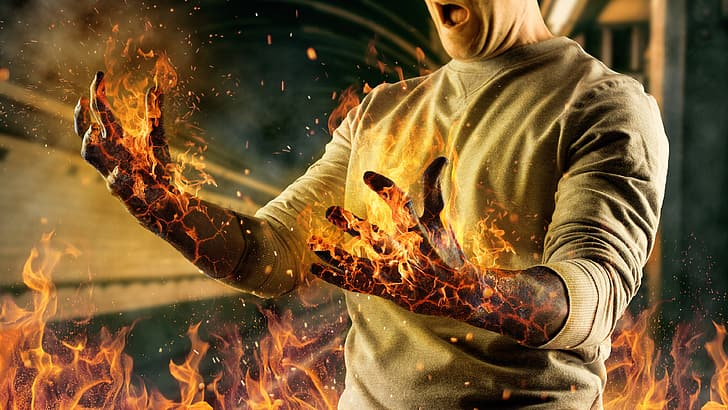
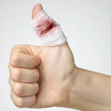
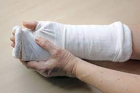

We can help you be at your best
Skin Burns
- Avoid handling the affected area more than necessary. See that your hands are as clean as possible by washing them.
- Do not apply lotions of any kind.
- Do not remove burned clothing and do not break blisters.
- Cover the area (including burned clothing), with a dry sterile dressing if possible, or similar material such as clean lint, freshly-laundered linen.
- Bandage firmly, except when blisters are present or suspected, in which case, bandage lightly.
- Immobilise the area by suitable means.
- Treat for shock

Major-cuts
- Place patient in a suitable position, elevating the bleeding part, unless it is a fractured limb.
- Do not disturb any blood clots formed.
- Removing as little clothing as possible, expose the wound.
- Remove any foreign bodies which are visible, and can be easily picked out or wiped off with a clean dressing.
- Apply and maintain both direct and indirect pressure.
- Apply a clean dressing and bandage.
- Immobilise the injured part. When the wound is near a joint, immobilise it using splints if needed.

Heat-Stroke
- Placing the person in a tub of cool water or a cool shower
- Spray with a garden hose
- Sponge with cold water
- Fan while misting with cool water
- Place ice packs or cool, wet towels on the neck, armpits and groin
- Cover with cool, damp sheets
Fracture
- Treat the fracture on the spot
Don’t move the patient till the injured part has been immobilised unless life is in immediate danger from some other cause.
If, however, circumstances are such that final immobilisation cannot be completed on the spot, carry out a temporary fix to enable the patient to be moved for a short distance to more suitable and safe surroundings.
Haemorrhage and severe wounds must be dealt with before continuing with the treatment of fractures, with due regard to requirements of both types of injuries.
-
Steady and support the injured parts at once, so that movement is impossible.
This prevents further injury and the increase in the bleeding which always takes place at the site of the fracture.
It also prevents broken bone ends from piercing or damaging the skin, blood vessels, nerves or muscles.
-
Immobilise the fracture by the use of bandages or the use of splints.
Using the patient’s body as a means of support, application of bandages would be adequate.
Additional support of splints may be required when there is a possibility of long or difficult transport before medical aid is possible.
Splints are required when both lower limbs are fractured.
